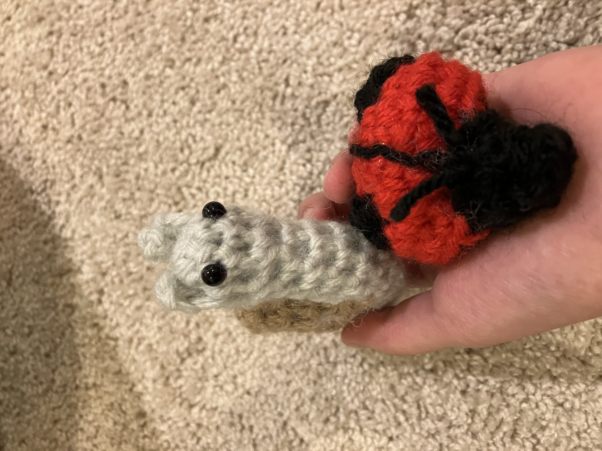
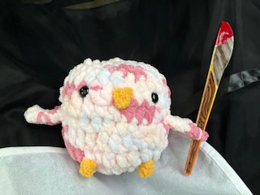

I have danced ballet at Emerald Ballet Academy (now not to be confused with Emerald Ballet Theater 🙄) for a few years. I don't remember when I started, but it was sometime in elementary school.
Now, I have performed in multiple Nutcrackers and spring performanced, produced by Emerald Ballet. I have also competed in the Youth American Grand Prix (YAGP) three times.
On the spring of 2025, Emerald Ballet Academy will be hosting our spring show: a combination of King Midas and Giselle! (This is not sponsored)
I have practiced art for many years, and I enjoy it a lot. Right now, my main mediums are acrylic, sketch, and color pencils.
I learn at two studios: Wenrui Art Studio, and Xiao Su School of Art.
I have participated in many contests. Unfortunately, I don't remember all their names, though I did enter into the Junior Duck Stamp Competition twice.
Go to this page to see my work:
Art
Along with drawing, I also enjoy crocheting, knitting, loom knitting, and occasionaly, embroidery. I am best at crocheting, and I have made many amigurumi projects.
Here are a few things that I have made:




It may be quite obvious that I like the Wings of Fire book series. Still, there are some other books that I enjoy:
- The Hunger Games series
- The Superteacher project
- Harry Potter
- Spy School
- One of Us is Lying
- Roller Girl (Graphic Novel)
- The Last Cuentista
- The House of Scorpions
- Nimona
I love listening to music. Right now, I'm in my 'sad music phase,' though I still do enjoy some happy songs. When I was young, I listened to Taylor Swift. Then, I started listening to Imagine Dragons and they became my favorite band. Recently, I listened to AURORA's music, and now she's my favorite, though Imagine Dragons is still a close second. Some of AURORA's songs that I like include:
- Runaway
- Running with the Wolves
- The Seed
- Cure for Me
- The River
- Soft Universe
- Exist for Love
- Some type of Skin
- Warrior
- A Temporary High
- A Soul with no King
- Your Blood
- Animal
- There are too many to list...
Some songs by Imagine Dragons that I like are:
- Thunder
- Bad Liar
- Radioactive
- Eyes Closed
- Whatever it Takes
- Demons
- On Top of the World
- It's Time
- Wrecked
- Children of the Sky
I LOVE DRAGONS
I will shout it from the clouds! Wings of Fire is my life and passion. Ever since that faithful 6th grader day, when I picked up the book and started reading, I have immersed myself into the wonderful world of Pyrrhia and Pantala.
You may think I am exaggerating. Well, I'm not. I have created a style of drawing, just for dragons. I draw them everywhere, from homework, to school whiteboards, to any paper and pencil I get my hands on. I constantly connect Wings of Fire events to my life. I have a bunch of dragon stickers, stuffed animals, statues, drawings, costumes, etc. If there is a chance to incorporate Wings of Fire into a project/assignment, I will literally start shaking in anticipation.
Learn more at Dragons
Background art by Joy Ang